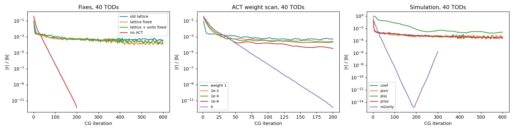
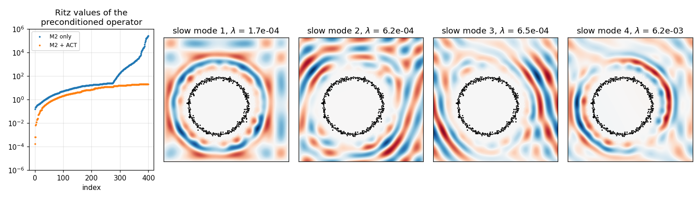
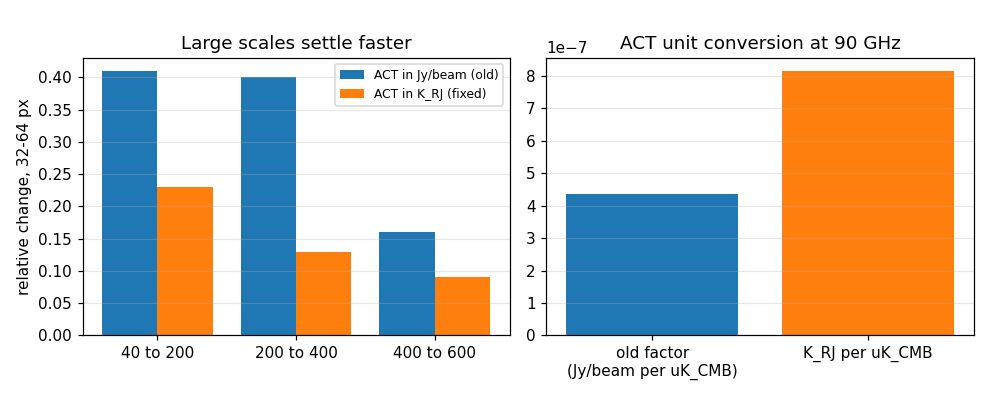
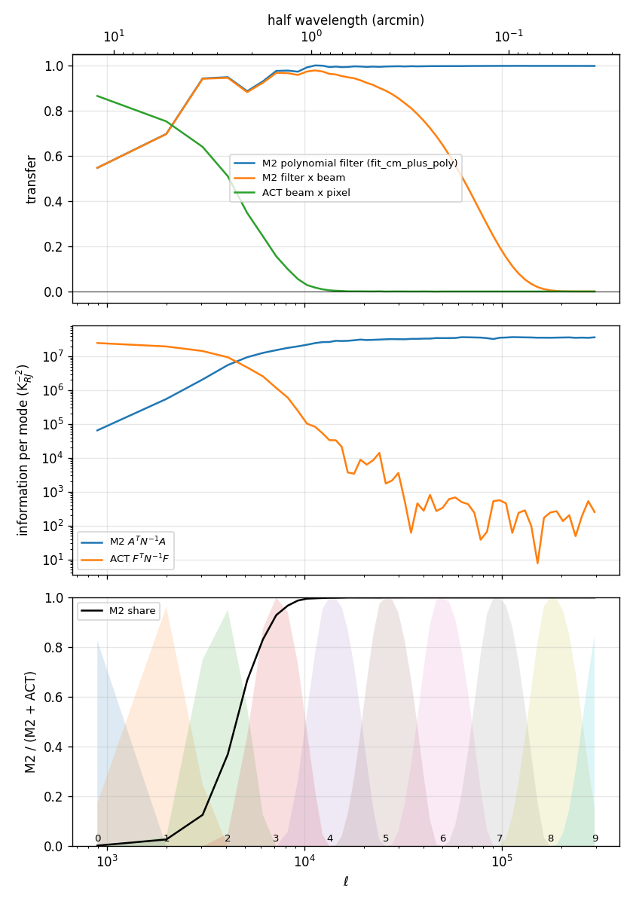
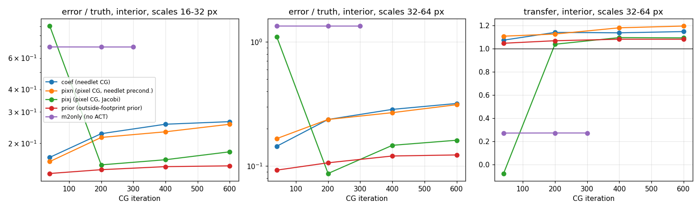
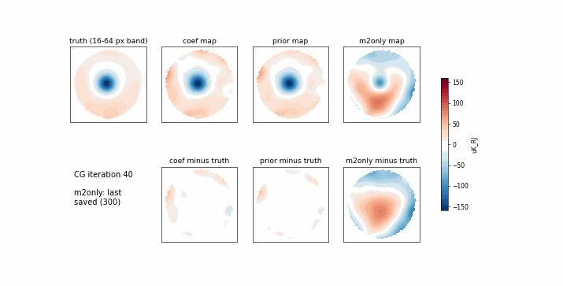
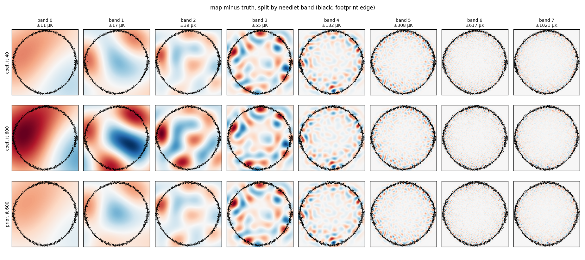
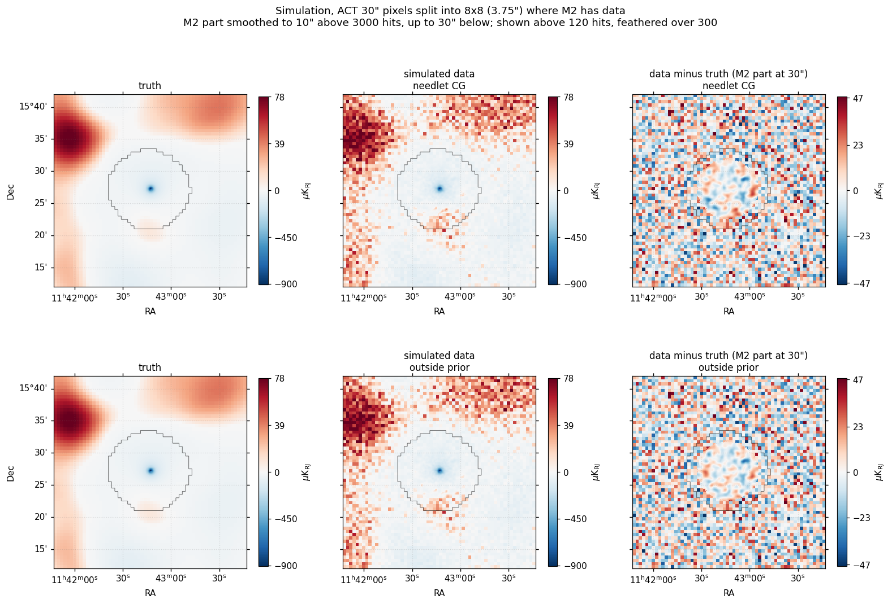

Large-scale convergence inside the M2 footprint
1. The problem
With M2 alone, conjugate gradient (CG) converges to machine precision. With ACT in the operator, the residual stops falling at a few times 10−4, and the largest scales of the map keep moving for hundreds of iterations.
The goal is a combined map that has settled inside the M2 footprint, especially on scales of a few arcminutes and larger. Outside the footprint we use the ACT map as it is, so convergence there does not matter. The underlying science problem is the one that started this work. M2 alone loses the large scales (the "bowl"), and in the earlier ACT + M2 attempts the ACT beam caused trouble at the M2 map edge.
In short: the residual floor comes from a handful of poorly determined modes. They live in a ring at the edge of the footprint, on scales where M2 and ACT hand over to each other (needlet bands 1–2, a few arcminutes). The simulation shows that the full-length solves start to fit noise in these modes. The in-footprint map is best at about iteration 40–200, and continuing to iterate makes the largest scales worse, mostly near the edge. An outside-footprint prior stops that drift. Latest: removing the M2 hits mask removes most of the drift with no prior at all (section 8).
2. Causes examined
The 40-TOD tests use 600 CG iterations unless noted. "Floor" means the level where the CG residual defined below stops falling.
What "residual" means here. CG solves the linear system H x = b for the needlet coefficients x: every band, at every lattice position of the padded map, inside and outside the footprint.
- Operator: (H x)i = Fi M ATN−1A M (Σj Fj xj) + Fi BTW B (Σj Fj xj). The first term is M2: Fi is band i's needlet filter, M the hits mask, A the pointing and N the SVD noise model. The second term is ACT, used only in the ACT bands: B is the ACT beam and pixel, W the ACT inverse variance. The prior term is added when one is used.
- Right-hand side: b = Fi M ATN−1d + Fi BTW mACT, the same weighting applied to the M2 TODs d and the ACT map.
- Residual: rk = b − H xk after k iterations. The curves plot ‖rk‖ / ‖b‖, a plain sum of squares over all coefficients. It is not preconditioned and not restricted to the footprint. With
--pixel-cgthe unknowns are the real-space pixels instead, with the same definition. - What it does and does not measure: rk = H (xexact − xk), so an error along a direction where H has eigenvalue λ shows up in r only as λ times that error. Poorly determined directions (small λ) can carry a large map error while hardly showing in the residual, and well-measured directions dominate it. A small residual is therefore not a small map error, which is why section 6 compares the maps with the simulated truth directly.

| Candidate cause | Test | Result | Verdict |
|---|---|---|---|
| Operator or preconditioner not symmetric | Random-vector symmetry checks on the M2 term, the ACT term and the preconditioner | Asymmetry about 1e-16 | ruled out |
| Ridge shift in the block preconditioner | Shift 1e-5 to 1e-1 | Same floor | ruled out |
| ACT's hard cutoff at band 3 | Change the ACT band set, add ACT to band 2 | Same or slower | ruled out |
| Preconditioner varies between iterations | Flexible (Polak–Ribière) CG | Same floor | ruled out |
| Recursive residual drifts from the true residual | Recompute the true residual | They agree | ruled out |
| Band lattices undersampled | Nyquist from each filter's support | ACT-only floor 9.3e-4 → 6e-7; joint floor lower but still there | real bug, fixed |
| ACT unit conversion | KRJ instead of Jy/beam | Residual curve unchanged; large scales settle faster | real bug, fixed not the floor |
| ACT weight too strong | Scale ACT weight 1 → 10−6 | Floor stays (3.5e-5 even at 10−6); zero converges | ruled out |
| Redundant (overcomplete) needlet coefficients | Solve for the pixel map instead (--pixel-cg) | Pixel CG stalls too (Jacobi worse) | ruled out as the sole cause |
| Coefficients outside the footprint | Drop them (--restrict) | Worse: new, slower edge modes | ruled out |
| Poorly constrained edge modes | Lanczos/Ritz analysis of the preconditioned operator | A few eigenvalues of 2e-4 to 6e-4, living just outside the footprint edge | identified, main suspect |
| Nothing constrains the outside of the footprint | Prior ε|m|² outside (--outside-prior) | Converges fast; in the simulation it is the closest to the truth at the largest scales | works, still being judged |
| M2 polynomial filter not in the noise model | Overlap measurement; Q N−1 Q deprojection | Information changes only 1–4% in bands 0–2; the noise model already down-weights those modes | ruled out, Q removed |
The slow modes
On the small test problem (one TOD, 180 × 180 pixels), the Lanczos data from CG give the spectrum of the preconditioned operator. Without ACT, its few tiny eigenvalues are exact null modes that the right-hand side never excites. With ACT, they become small but nonzero (1.7e-4 to 6e-4), and they are excited. Each is a pattern of needlet coefficients sitting in a ring just outside the hit footprint. Only about 0% of its power falls inside the footprint, yet the solution weights it by 1/λ, so together these modes carry 9–13% of the map inside the footprint.

3. Ruled out
- Numerical faults in CG: asymmetry, a nonlinear preconditioner, drift between the recursive and true residuals, and the ridge shift.
- The ACT band set: neither the hard cutoff at band 3 nor adding ACT to band 2 helps.
- The units, as the cause of the floor. The residual curves with old and new units are essentially the same (1.6e-4 and 1.5e-4 at iteration 600). The data enter only the right-hand side, and CG converges on a positive-definite system however inconsistent the data are. A 3.5× weight change also cannot account for a floor that survives a 106 weight reduction.
- ACT being too heavily weighted. Any nonzero ACT weight leaves a floor.
- The needlet basis on its own. Pixel-space CG also stalls, so the floor belongs to the problem, not to the coefficient representation.
- Dropping coefficients outside the footprint. It makes things worse.
- The lattice bug, as the whole story. It was real and is fixed, but the joint floor remains.
- The M2 polynomial filter missing from the noise model. Putting it in (Q N−1 Q) changed M2's information by only 1–4%, so the option was removed again (section 4).
4. Found along the way
Lattice undersampling fixed · 5009a1d
get_downsamps computed each band's limit using the needlet box size L = n·pix·√2, but compared it with the map side n·pix. Every band's lattice was therefore √2 too coarse, and the top of each band aliased. The fix takes Nyquist from the filter support (--lattice-tol 1e-3), and a test now checks it.
ACT units fixed · 6c6b240
The M2 TODs are in KRJ; WITCH confirms this, since its beam kernel sums to 1 and its prefactor goes from y to KRJ. ACT was being converted to Jy/beam: 4.37e-7 per µKCMB instead of 8.15e-7. ACT was therefore 1.86× too faint in amplitude and 3.5× too heavily weighted. The default is now --m2-unit K_RJ.

Earlier fixes
MPI reduce chunked wavelet maps by nx·ny, so only band 0 was reduced and the source lost about 15× in amplitude (d6904a0). ACT inverse variance was counted 100× over the fine pixels (1abee2d). Overlapping bands were double counted, and the truncated probed matrix was indefinite (dcf2377).
Map orientation in the scripts fixed · 9c5ad71
FITS maps from minkasi are the transposes of the .npy arrays. Two diagnostic scripts read the hits and ACT maps untransposed, which put 6.3% of footprint pixels in the wrong place. The library was not affected, and the corrected numbers moved by at most 0.02.
ACT is not masked to the M2 hits
coarse2fine only upsamples, so the ACT inverse variance covers the whole map. An earlier claim that it was masked was wrong. The outside of the footprint is therefore free only in the bands without ACT.
M2 noise model and the polynomial tested, no effect, removed · 72ae36f
fit_cm_plus_poly fits the common mode and a per-detector quadratic together, but subtracts only the quadratic; the common mode stays in the data. The SVD noise model never sees the subtracted polynomial, so the model and data could disagree at large scales. Tested with an option --deproject-poly: N−1 → Q N−1 Q, where Q projects Legendre orders 0–2 out of every detector, so the model matches the filtered data exactly. A first version also projected out the common mode. That was a mistake, because the common mode is still in the data, and it was corrected.
Result: Q changes M2's information per mode by 1%, 2% and 4% in bands 0, 1 and 2 (section 5). The SVD noise model already gives those modes almost no weight, which shows the noise model handles this correctly by itself. Q was an extra step with no effect, and it has been removed (added in 9f6332a and f42a467, removed in 72ae36f). The simulation runs with Q were stopped before they finished and are not needed.
5. Transfer functions and information per mode
Question: how well do the M2 and ACT transfer functions overlap, and does the noise model already tell the solver to trust ACT, not M2, on large scales? Script: examples/transfer_overlap.py, 40 TODs, 16 random probes, inside the hits ≥ 20 footprint. It measures four things for each Fourier mode, averaged in ℓ:
- M2 filter transfer: the data filter, i.e. bin(fit_cm_plus_poly(A s)) against bin(A s). This is purely the polynomial subtraction.
- M2 information: the Fourier diagonal of AᵀN−1A with the real SVD noise model. This is what the solver believes M2 knows.
- ACT transfer: beam × ACT pixel.
- ACT information: the ACT term exactly as
twores_ex.pybuilds it, in KRJ−2.

| Band | Half-wavelength | M2 polynomial transfer | ACT beam × pixel | M2 info | ACT info | M2 share | M2 info with Q |
|---|---|---|---|---|---|---|---|
| 0 | 10.6′ | 0.55 | 0.87 | 6.5e4 | 2.5e7 | 0.3% | −1% |
| 1 | 4.6′ | 0.72 | 0.75 | 7.7e5 | 1.9e7 | 3.8% | −2% |
| 2 | 2.5′ | 0.93 | 0.50 | 5.7e6 | 9.7e6 | 37% | −4% |
| 3 | 1.3′ | 0.96 | 0.15 | 1.7e7 | 1.4e6 | 92% | −2% |
| 4+ | < 0.7′ | ≥ 0.995 | ≈ 0 | ≈ 3e7 | ≈ 0 | > 99.8% | ≈ 0 |
What this shows
- The noise model already says "don't trust M2 on large scales". The common mode stays in the data, so the SVD noise model sees the atmosphere and down-weights it. M2's information per mode is about 500× lower in band 0 than at small scales. M2 holds 0.3% of the information in band 0 and 4% in band 1, with no manual band cut.
- The handover is in band 2, where M2 holds 37% and ACT 63%. This is the same band, and the same edge region, where the slow modes live.
- The polynomial does not matter. Projecting it out of the noise model (Q, see section 4) changes M2's information by only 1–4% in bands 0–2. The first version, which wrongly also projected out the common mode, changed it by 2–6%. The noise model already does the down-weighting, so Q was removed.
- The noise down-weighting is why M2 alone loses the large scales. M2's data carry almost no information there, so the M2-only map cannot recover them (the bowl, transfer 0.27 in section 6). That is what ACT is for, and the joint solves recover them.
- A correction to an earlier extrapolation: from the 2-TOD debug run I estimated M2's share at about 33% in band 1. The measured value with 40 TODs is 3.8%.
6. Simulation with a known sky
Sky: a WITCH model of MOOJ1142 (gNFW, subcluster and point source, M2 beam, KRJ) plus a lensed CMB realisation, made by examples/make_sim_sky.py. It is injected into the raw TODs before fit_cm_plus_poly. M2 noise is the real data with its sign flipped on every other TOD; ACT is the beam-smoothed, pixel-averaged sky plus white noise from its inverse variance. 40 TODs, corrected lattice and units. The true decrement is −6.49e-4 KRJ. "Interior" means more than 20 px inside the footprint edge.
| Run | Residual | Decrement | Error / truth, 16–32 px | Error / truth, 32–64 px | Transfer, 32–64 px |
|---|---|---|---|---|---|
coef needlet CG, iteration 40 | – | −6.42e-4 | 0.17 | 0.14 | 1.07 |
coef needlet CG, iteration 600 | 2.3e-4 | −6.43e-4 | 0.26 | 0.32 | 1.15 |
pixn pixel CG, needlet preconditioner, 600 | 4.6e-4 | −6.44e-4 | 0.26 | 0.31 | 1.20 |
pixj pixel CG, Jacobi, 600 | 2.6e-3 | −6.43e-4 | 0.18 | 0.16 | 1.09 |
prior outside-footprint prior, 600 | 3.2e-4 | −6.42e-4 | 0.15 | 0.12 | 1.08 |
m2only no ACT, 300 | converged | −3.51e-4 | 0.69 | 1.34 | 0.27 |


Reading the simulation
- The joint map is already good. ACT fixes the bowl: all joint solves recover the decrement to about 1% and the largest scale with transfer 1.05–1.2, where M2 alone gives 0.27. What remains is the red and blue patches at the footprint edge in Figure 6. Those patches are what the residual floor and the large-scale drift are about.
- Continuing to iterate is not making the map better. The extra iterations mostly fit the slow edge modes, and in this simulation the fitted amplitude is noise. That makes the unregularised least-squares solution worse at large scales than an early iterate. The residual floor is CG slowly working its way into these noise-dominated directions.
- A small prior outside the footprint is the most accurate option tested. It is also the fastest to converge. Earlier on the toy problem it shifted the map by about 10% relative to the no-prior solution, and the simulation says that shift moves it toward the truth.
- Not yet tested: a second noise or CMB realisation, so these numbers carry one realisation's scatter.
How the prior works
Options --outside-prior 1e-2 --prior-non-act add a quadratic penalty to the least-squares objective. It pulls the real-space map outside the footprint toward zero, but only through the bands that ACT does not constrain:
- Penalty: ε ‖Pout Σj∉ACT Fj xj‖². Pout is 1 outside the footprint (hits < 20) and 0 inside. The sum runs over the non-ACT bands, which are 4–9 here, since ACT is used in bands 0–3.
- Effect on the operator: for each non-ACT band i it adds Fi ε Pout Σj∉ACT Fj xj to (H x)i, and adds nothing to b, so the mean of the prior is zero. The ACT bands are left alone, because ACT already measures them outside the footprint; its inverse variance is not masked.
- Strength: ε = c × (median M2 weight per lattice point inside the footprint in the finest band) / (median prior weight per point outside), with c = 10−2. So outside the footprint, a pixel in the non-ACT bands is held about as firmly as 1% of a typical M2 pixel's weight.
- Preconditioner: the prior's blocks are probed like the M2 and ACT blocks and added to the block preconditioner.
It is a Tikhonov (ridge) regulariser on the unmeasured part of the solution. Without it, the fine-band needlets outside the footprint are fixed only by how they leak into the footprint edge, which is the weakly determined direction CG keeps working on. A zero-mean prior is not physical outside the footprint, but the ACT bands carry the sky there, and what it suppresses is finer than ACT can see.
Which bands carry the error
Script examples/band_error.py splits the in-footprint error (map minus truth) into needlet bands, Fi2(m − truth). The saved maps are zero outside the footprint, so only the inside is used. I had guessed that the edge patches sat in the fine bands 4+, the ones the prior acts on. They do not.

| Error / truth rms, interior | Band 0 | Band 1 | Band 2 | Band 3 | Band 4 | Band 5 |
|---|---|---|---|---|---|---|
| needlet CG, iteration 40 | 0.19 | 0.17 | 0.26 | 0.52 | 0.87 | 2.65 |
| needlet CG, iteration 600 | 0.34 | 0.36 | 0.49 | 0.55 | 0.87 | 2.65 |
| prior, iteration 600 | 0.12 | 0.15 | 0.24 | 0.52 | 0.86 | 2.65 |
- The drift is in bands 0–2. From iteration 40 to 600 their interior error roughly doubles; nothing changes in bands 3 and up. In the edge strip, bands 1–3 carry 77–84% of the 16–64 px error, and band 4 only 6–12%.
- The prior fixes bands 0–2, although it acts only on bands 4–9 outside the footprint. At iteration 600 it is better than the needlet solve was at iteration 40 (0.12 against 0.19 in band 0). So the coupling between the fine bands outside and the large scales inside goes through the operator, not through the bands overlapping. My guess is the hits mask M in the M2 term: cutting a fine-scale needlet at the footprint edge gives it some large-scale content. That has not been tested.
- Bands 5 and up are M2-noise dominated (error several times the signal or more), as expected for 40 TODs. Their signal is mostly beam-suppressed.
A signal-based prior strength
For a zero-mean Gaussian prior on the bands it acts on (4–9), the natural strength is ε = 1 / (sky variance per pixel of the sum of those bands). From the simulated sky components:
| Sky part, bands 4–9 | rms per pixel (KRJ) | ε = 1 / variance | Relative to ε used |
|---|---|---|---|
| Cluster (whole map) | 1.0e-5 | 9.8e9 | 4.6e4 |
| Point source (whole map) | 4.5e-6 | 4.9e10 | 2.3e5 |
| CMB (whole map) | 1.7e-7 | 3.6e13 | 1.7e8 |
| All together (whole map) | 1.1e-5 | 8.2e9 | 3.9e4 |
| Truth in the 20 px strip just outside the footprint | 1.2e-6 | 7.0e11 | 3.3e6 |
| Used: c = 10−2 of the M2 pixel weight | (M2 noise 2.2e-4 per pixel) | 2.1e5 | 1 |
On these scales the sky outside the footprint is 20–200 times smaller than the M2 noise per pixel, and the primary CMB is damped away. A physically motivated zero-mean prior would therefore be 104–106 times stronger than the one used, and would essentially fix those coefficients at zero. Pulling toward zero is about right for these bands; what is left there is cluster substructure and point sources, and the cluster part is from this simulation's model. Caveats: the variance per pixel treats the fine part as white, and the cluster and the source are not Gaussian or stationary.
7. Current picture and next steps
The working explanation: M2 and ACT hand over in band 2. At the footprint edge, neither experiment pins down needlets that hang half outside the footprint. That leaves a few weakly determined, noise-dominated modes. CG spends hundreds of iterations on them, which shows up as the residual floor. Fitting them makes the large scales near the edge worse, not better. This is closely related to the original "ACT beam causes trouble at the M2 edge" problem.
This is a spatial problem, not a spectral one. The noise model already does the scale weighting between M2 and ACT correctly. What no weighting can fix is that, near the edge, the needlets at band 1–2 scales extend into a region where M2 has no data and ACT measures those scales only weakly (beam transfer about 0.5). Those combinations are then fixed only by noise, unless a prior or an early stop decides them.
Options to decide on
- Adopt the outside-footprint prior, judged by the simulation, and choose its strength (c = 1e-2 used here).
- Or stop CG early with a criterion measured inside the footprint, though that is a less principled form of regularisation.
- Repeat the simulation with another seed, and with 106 TODs, before settling.
- Make
--lattice-tolthe default, or build the needlet with L = n·pix. - Housekeeping: the response caches do not record their settings, and
reports/needlet.htmlstill has pre-fix numbers.
8. Best map so far: no hits mask
By default twores_ex.py masks pixels with fewer than 20 hits: the M2 model is zero there and the binned data are zeroed. The TOD samples that land on those pixels are still in the data, though, with sky in them that the model cannot explain. The noise model treats that sky as noise, and the SVD noise model correlates samples across detectors and time, so it carries the unexplained signal into the pixels just inside the footprint edge. Running with --min-hits 0 removes the cut, so every sample is modelled and low-hit pixels are simply noisy. Same simulation and 40 TODs as section 6, judged in the same hits ≥ 20 footprint:
| Interior error / truth | Band 0 | Band 1 | Band 2 | Largest scale (32–64 px) | Its transfer | Display residual rms, M2 part |
|---|---|---|---|---|---|---|
| masked, iteration 600 | 0.34 | 0.36 | 0.49 | 0.32 | 1.15 | 11.1 µK |
| masked + outside prior, 600 | 0.12 | 0.15 | 0.24 | 0.12 | 1.08 | 9.7 µK |
| no mask, no prior, 40 | 0.09 | 0.07 | 0.18 | 0.09 | 1.04 | – |
| no mask, no prior, 600 | 0.16 | 0.10 | 0.28 | 0.10 | 0.98 | 9.9 µK |
Without the mask, the solve matches or beats the prior at the largest scales, with no prior at all, and the edge patches are mostly gone. It still drifts a little in bands 0 and 2 between iterations 40 and 600. Still running: no mask with the prior, the signal-strength prior, and the band-4-only prior.
Display maps
The figures below are for viewing only. They come from examples/multiscale_map.py (real data) and examples/sim_multiscale.py (simulation):
- Base grid: 30″ ACT pixels. Each one containing M2 data (hits ≥ 20) is split into 8 × 8 sub-pixels of 3.75″.
- What a sub-pixel shows: the joint map, where it has at least 120 hits, feathered into the ACT value over the next 300 hits. Sub-pixels with fewer than 120 hits show their ACT pixel's value.
- Smoothing that follows the hits: the joint map is smoothed to 10″ FWHM where it has at least 3000 hits. Below that, the FWHM grows as 10″ × √(3000 / hits), up to 30″ (
--smooth-ref-hits 3000). The M2 noise after smoothing goes as 1 / (FWHM √hits), so this keeps the displayed noise about the same everywhere instead of letting it grow toward the edge. For 40 TODs the FWHM is about 16″ at the 90th-percentile hits and 30″ at the median. With all TODs the noise is about 1.6 times lower, so a smaller reference will do. - Display only: the threshold affects only the picture. The solve still uses every sample, which is what removes the edge bias, while the picture no longer shows the noisy low-hit pixels.
- Elsewhere: unsplit pixels show the ACT map.
Why low-hit pixels speckle. On the scales a few sub-pixels across, ACT contributes nothing: those are very high ℓ, where its beam transfer is 0.004 or less in band 4 and about 0 above (Figure 4). So at those scales the joint map is pure M2, and where M2 has few hits it is pure M2 noise. Its rms grows as 1/√hits. With 40 TODs it is large even at full weight: 32 µK at 10″ smoothing for 420–1000 hits, against a positive colour range of only 78 µK set by the CMB, so noise peaks saturate. The joint solve is behaving correctly here: there is no information on those scales at those pixels, and the noise shows it. The display threshold (--show-hits) hides those pixels by showing the ACT value instead, which on those scales just means showing nothing. The hits-dependent smoothing deals with the rest: it smooths more where there are fewer hits, and keeps the large scales of the joint map.

